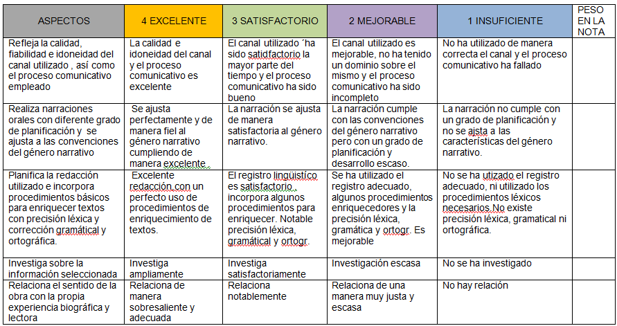
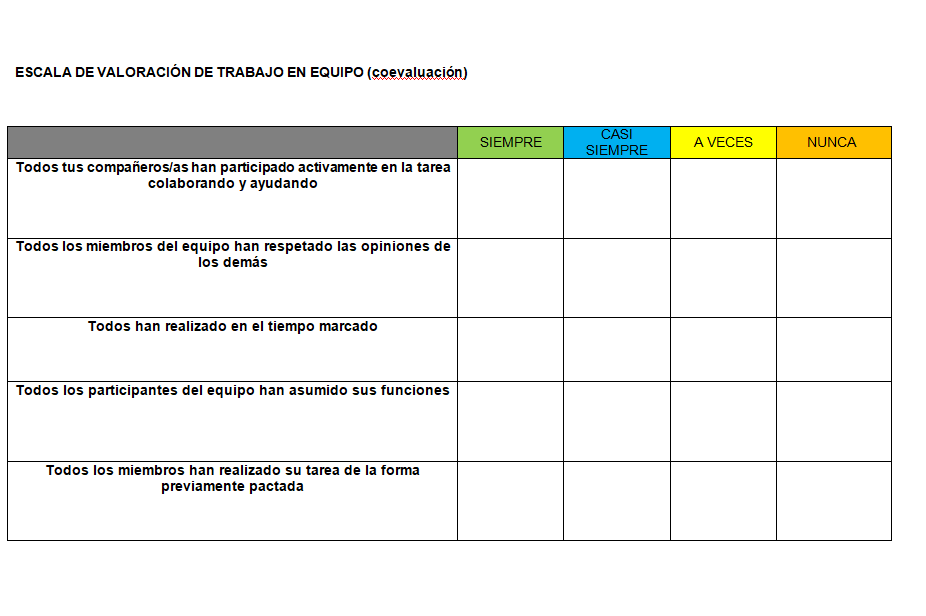

Actividad 2B
Evaluación
Rúbricas para evaluar
Vuestra evaluación será global, continua y formativa, y tendrá en cuenta el grado de desarrollo de las competencias clave y vuestro progreso en el conjunto de los procesos de aprendizaje, por lo tanto, para evaluar esta situación de aprendizaje se incluirán procedimientos, instrumentos y técnicas de evaluación variados, diversos y adaptados para que la evaluación sea objetiva. En esta unidad de programación, contempla una situación de aprendizaje que tiene varias producciones.
Tarea 1: se trata de una actividad interdisciplinar en la que vosotros os centrareis en situar la obra de lectura en su contexto social y geográfico. Cumplimentaréis una ficha y unas actividades (40%)
Tarea 2: atendiendo al texto narrativo y sus características, elaboraréis dos productos finales que serán un video (40%) o una infografía (40%)
Con una lista de cotejo evaluaremos la participación en el resto de actividades del aula como puede ser el debate (20%)
Aquí os dejo las rúbricas para poder evaluar vuestras producciones:
Rúbrica para evaluar la ficha trabajada en el aula:
| CRITERIO | 4 - Excelente | 3 - Bien | 2 - Suficiente | 1 - Insuficiente |
|---|---|---|---|---|
| 1. Comprensión del contenido | Responde correctamente a todas las preguntas con información completa y bien explicada | Responde casi todo correctamente, con pequeños errores | Respuestas incompletas o poco claras | Muchas respuestas incorrectas o sin responder |
| 2. Uso de fuentes | Busca información variada y fiable, bien seleccionada | Usa alguna fuente adecuada | Usa pocas fuentes o poco adecuadas | No busca información o copia sin sentido |
| 3. Expresión escrita | Redacción clara, ordenada y sin faltas | Redacción bastante clara, pocos errores | Se entiende con dificultad, varios errores | Difícil de entender, muchos errores |
| 4. Organización del trabajo | Ficha completa, bien organizada y presentada | Presentación correcta | Presentación poco cuidada | Desordenado o incompleto |
| 5. Trabajo en grupo | Colabora activamente, respeta y ayuda al grupo | Participa de forma adecuada | Participa poco | No colabora |
| 6. Uso de vocabulario histórico-literario | Usa términos adecuados (siglo, Edad Moderna, clero, etc.) correctamente | Usa algunos términos correctamente | Usa pocos términos o con errores | No usa vocabulario adecuado |
| 7. Análisis y reflexión | Interpreta bien la sociedad y saca conclusiones claras | Hace alguna reflexión correcta | Reflexión simple o poco clara |
No hay reflexión |
Rúbrica para evaluar la infografía:
| CRITERIO | 4 - Excelente | 3 - Bien | 2 - Suficiente | 1 - Insuficiente |
|---|---|---|---|---|
| 1. Contenido (amos y tratados) | Aparecen todos los amos con información completa y correcta | Aparecen casi todos, con pequeños errores | Faltan varios amos o hay errores | Información muy incompleta o incorrecta |
| 2. Comprensión de los personajes | Explica claramente cómo es cada amo y qué representa (crítica social) | Explica los amos de forma general | Descripciones simples o poco claras | No se entiende cómo son los amos |
| 3. Organización de la información | Información muy bien organizada, clara y fácil de seguir | Organización adecuada | Algo desordenada | Muy desorganizada |
| 4. Diseño visual | Infografía atractiva, creativa y muy visual | Diseño correcto y claro | Poco visual o recargado | Difícil de leer o poco cuidado |
| 5. Uso de elementos visuales | Usa imágenes, iconos o esquemas que ayudan a entender | Usa algunos elementos visuales | Pocos elementos visuales | No usa elementos visuales |
| 6. Expresión escrita | Sin faltas, vocabulario adecuado | Pocas faltas | Bastantes errores | Muchos errores, difícil de entender |
| 7. Uso de vocabulario literario | Usa términos como “amo”, “tratado”, “picaresca” correctamente | Usa algunos términos | Usa pocos términos | No usa vocabulario adecuado |
| 8. Trabajo en grupo | Excelente colaboración y reparto de tareas | Buena colaboración | Participación desigual | No hay colaboración |
Rúbrica para el vídeo

Puntuación
- 4 = 10
- 3 = 7,5
- 2 = 5
- 1 = 2,5

Obra publicada con Licencia Creative Commons Reconocimiento Compartir igual 4.0